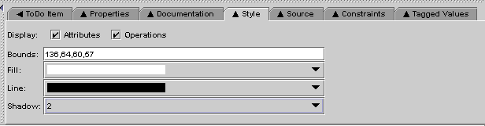

ArgoUML's Style Tab allows you to edit the visual properties of the selected design element. The contents of this tab pane may vary slightly depending on the selected design element. For example, in the figure above, which is the style tab for a class, you can toggle the visibility of the attributes and operations compartiments, set the line and filling color, and adjust the width of the shadow.
Back to ArgoUML Tours
Back to ArgoUML Home